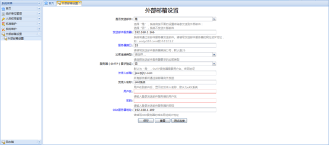
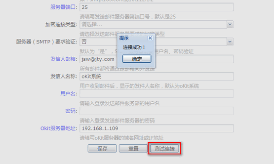
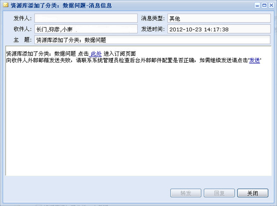

此功能用于将oKit系统内的通知发送到任意外部的邮件地址，用户只需要在个人资料中填写电子邮件地址，即可以在不登录oKit系统的情况下，接收项目的变更通知。

图 外部邮箱设置界面
（1）是否发送邮件：外部邮件系统的总开关，控制系统是否向外部邮箱发送邮件，仅当选择“是”的时候，下面的其他设置才有效。
（2）发送邮件服务器：设置SMTP服务器，邮件将通过此服务器向外发送。例如，QQ邮箱的SMTP服务器地址为smtp.qq.com。
（3）服务器端口：STMP服务器端口，默认为25，如果设了置加密类型，则需要修改为相应的端口。例如，QQ邮箱服务器使用SSL加密连接时，端口为995。
（4）加密连接类型：连接SMTP服务器时需要的加密连接，默认为不加密，请根据邮件服务供应商的设置进行选择。
（5）服务器（SMTP）要求验证：设置SMTP服务器是否需要用户名和密码验证，请根据邮件服务供应商的设置进行选择。
（6）发信人邮箱：和SMTP服务器对应的邮箱地址，所有外部邮件都将通过此邮箱发送。
（7）发信人名称：显示在邮件发件人处的名称，默认为oKit系统。
（8）用户名：使用此用户名进行SMTP服务器验证。
（9）密码：使用对应的密码进行SMTP服务器验证。
（10）Okit服务器地址：用于邮件中向系统跳转的链接地址，请填写部署oKit系统的服务器地址。
注意：
设置完成够请点击测试按钮，进行服务器连接测试，以确保外部邮件系统能够正常工作。如图：

图 服务器连接测试
系统中以下事件将触发外部邮件的发送，向参与该事件的人员发送通知邮件。例如，任务的变更将会通过外部邮件通知所有参与此任务的人。
（1）大事记：添加、修改、删除大事记。
（2）节点：添加、修改、处置、删除节点。
（3）任务：添加、发布、变更任务，上传任务文件。
向外部邮箱发送失败后，系统会自动向用户的内部邮箱发送邮件提示，告知用户向收件人外部邮箱发送失败。提醒用户联系系统管理员检查后台外部邮件配置是否正确以及否继续发送该邮件。

图 外部邮件发送失败提示